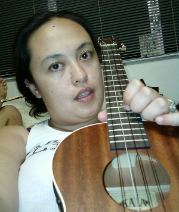

The earliest recordings of Rachel (later know as Island Girl) were taken when she was three years, playing on a toy piano. Doubtless though she was singing way before then, perhaps even as a fetus and has never stopped (at least not for long). 10 years of piano playing, recorder for 15 years (3 different sizes) and viola -- as a fiddle -- only begin to unfold her musical experience. She is also a well-versed Ukulele player, a budding guitar player and a masterful mezzo soprano with a love for all types and styles of music.
Island Girl's love for Ukulele began in 4th grade when she was in the Puanani Players and has continued ever since. In high School, she continued her musical education as a normal part of the curriculum at the Honolulu Waldorf School and extra-curricular activities.
Island Girl also got the opportunity to go to Germany for the first time in 11th grade, so Ukulele in hand, she explored Europe and brought the spirit of Aloha wherever she went. This turned into a long love affair with western Europe which someday may again call her back to the European continent.
After graduating from Colorado College where she studied German (degree) and Music, she kept music as a hobby while exploring other endeavors. This could only last so long before she explored other outlets, for music including a Led Zeppelin cover band, 6250, a rap group, collegium musicum, early music ensemble, all the while keeping up the Ukulele. Now she has decided to share her music with her home islands and refuel on sand, sun and relaaaax.